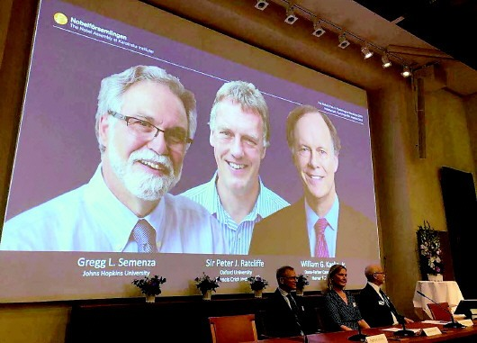
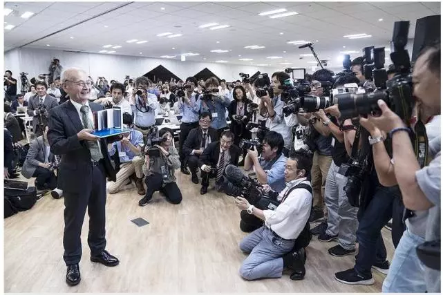

作品就贴点今年的诺贝尔奖了<\br>
10月7日，2019年诺贝尔生理学或医学奖获奖者揭晓：威廉·凯林(William G. Kaelin Jr)，彼 得·拉特克利夫(Sir Peter J. Ratcliffe)以及格雷格·塞门扎(Gregg L. Semenza)三位科学家获得 这一奖项，获奖理由为，发现了细胞如何感知以及对氧气供应的适应性。

诺贝尔化学奖得主吉野彰日前表示，回收电池是获得足够原材料以满足电动汽车需求激增的关键。
